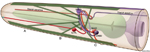

Figures
MusFIG 7 - Head, neck and body
wall muscles
MusFIG 8 - Structure of the
platymyarian obliquely striated
muscle

MusFIG 9 - Organization of the
myofilament lattice
MusFIG 10 - Structure of the
C. elegans body wall muscle cell
MusFIG 11 - Structure and
components of C. elegans FOs
MusFIG 12 - Surface views of
obliquely striated somatic
muscles of C. elegans
MusFIG 13 - Structure of
attachment plaques
MusFIG 14A-E - Development of
somatic muscle
MusFIG14F-K - Development of
somatic muscle
MusFIG 15A - Arrangement of
body wall muscle cells in adult
MusFIG 15B - Arrangement of
body wall muscle cells at
430 min after first cell division

MusFIG 16 - Innervation of head
muscles for foraging
MusTABLE 1 - Differences
between C. elegans and
vertebrate striated muscle
MusTABLE 2- Embryonic events
in muscle and body wall
development

MusFIG Cell List